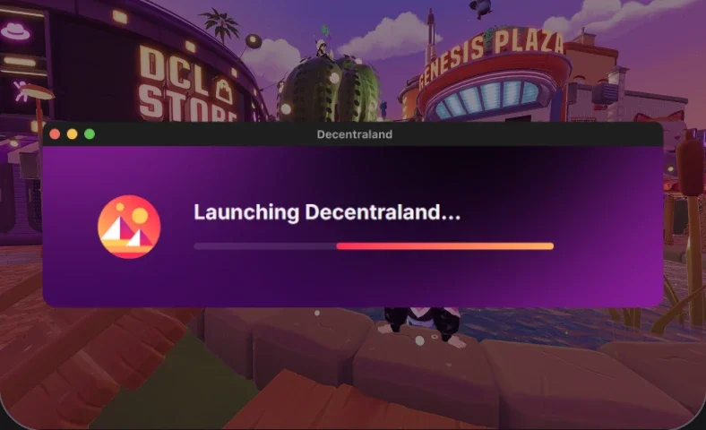
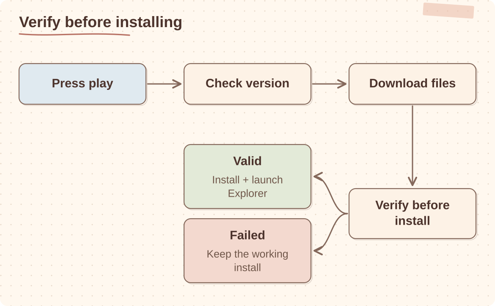

Case study
Decentraland Launcher
We replaced Decentraland's Electron launcher with Rust and Tauri, bringing the initial download from more than 100 MB to about 1 MB.
Rust / Tauri / TypeScript UI on native WebViews / S3 artefact distribution / deep links / Sentry / Windows + macOS
Problem
The launcher is the first part of the product a new user sees. A large download, a stalled update or a process that silently fails can lose that user before the client opens.
The original Electron launcher was heavy for what it needed to do, with an entry-point download over 100 MB. The rework moved the system-level work into Rust: update checks, downloads, verification, process launch, deep links and typed errors. The UI stayed web technology through Tauri, but the bundled-browser cost was removed and the launcher came down to about 1 MB.

Goals
- Keep the download and launch funnel small enough that users do not drop before reaching the product
- Make install and update reliable, so users always end up on the latest client
- Cut the launcher's own footprint: binary size, memory and startup time
- Support signed builds, release channels and store distribution
- Handle
decentraland://deep links into an app that may not be installed or running yet - Make failures diagnosable: typed errors, user-readable messages, full detail to Sentry
Architecture
One click becomes a verified, recoverable launch.

The Rust core owns everything that can fail in a way that matters: download and verification, install state, version channels, process launch and deep-link routing. Frontend and backend communicate through one union-typed command enum, so the IPC surface is explicit and exhaustively matched rather than a bag of ad-hoc events.
Decisions that mattered
- Measure the funnel, not just crashes. Install, update, launch and sign-in are tracked separately, so “it failed” becomes a step. Errors are typed, shown to the user as short messages and sent to Sentry with full detail.
- Resolve install state before following a deep link. A
decentraland://link can arrive when the client is missing, outdated or closed. The launcher installs, updates or launches first, then passes the link on. - Treat the migration as the riskiest release. The new launcher had to arrive through the old one’s update path and then replace it. There was no second chance on that release.
- Native core, operating-system web view. A launcher does filesystem, process, checksum and protocol work. Rust handles that, and the UI uses the system web view, so we stopped shipping a whole browser to show a few screens.
Lessons learned
- Reducing launcher size mattered because it removed friction before the user reached the product.
- We started treating distribution failures with the same seriousness as client crashes.